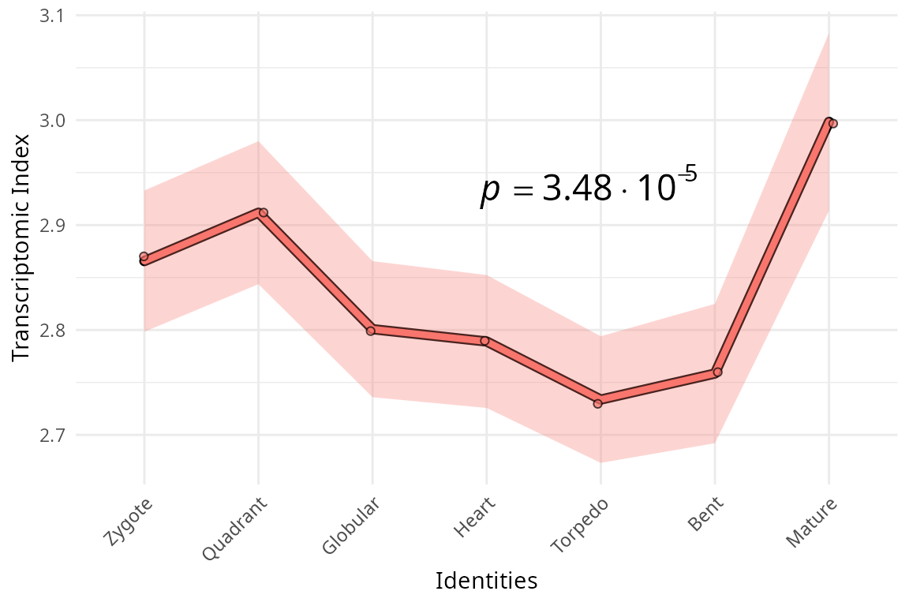
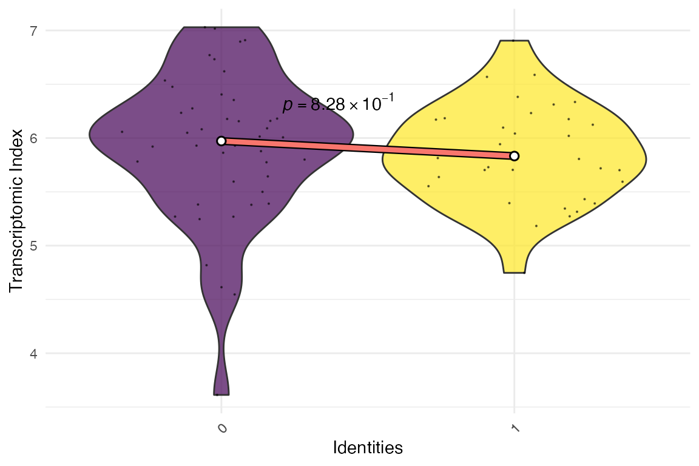

Bring your datasets into myTAI
Source:vignettes/phylo-expression-object.Rmd
phylo-expression-object.RmdS7 BulkPhyloExpressionSet and ScPhyloExpressionSet objects
Starting from myTAIv2, we moved on from the traditional
data.frame to the new S7 OOP system
to facilitate fast and flexible computation for evolutionary
transcriptomics analyses.
To illustrate this, we will use the example data
example_phyex_set. The BulkPhyloExpressionSet
and ScPhyloExpressionSet objects are designed to store gene
expression data along with associated metadata such as gene age
information (or phylorank), experiment
type and other relevant properties.

We will first focus on the BulkPhyloExpressionSet
object, which is for bulk RNA-seq data.
# inspect the object
example_phyex_setShow output
## PhyloExpressionSet object
## Class: myTAI::BulkPhyloExpressionSet
## Name: Embryogenesis 2019
## Species: Arabidopsis thaliana
## Index type: TAI
## Stages : Preglobular, Globular, Early Heart, Late Heart, Early Torpedo, Late Torpedo, Bent Cotyledon, Mature Green
## Number of genes: 27520
## Number of stages : 8
## Number of phylostrata: 19
## Number of samples: 24
## Samples per condition: 3 3 3 3 3 3 3 3
S7::prop_names(example_phyex_set)Show output
## [1] "strata" "strata_values"
## [3] "gene_ids" "name"
## [5] "species" "index_type"
## [7] "identities_label" "expression"
## [9] "expression_collapsed" "groups"
## [11] "identities" "sample_names"
## [13] "num_identities" "num_samples"
## [15] "num_genes" "num_strata"
## [17] "index_full_name" "group_map"
## [19] "TXI" "TXI_sample"
## [21] "null_conservation_sample_size" "precomputed_null_conservation_txis"
## [23] "null_conservation_txis" ".expression"
## [25] ".groups" "precomputed_bootstrapped_txis"
## [27] "bootstrapped_txis"
# let's explore the properties using @
# for example:
example_phyex_set@strata |> head()
example_phyex_set@gene_ids |> head()
example_phyex_set@.expression[1:4,1:5]See how rich this BulkPhyloExpressionSet object is!
The BulkPhyloExpressionSet is designed to ensure
efficient interaction with myTAIv2 functions. For example,
if you try the myTAI::stat_flatline_test() function twice,
i.e.
myTAI::stat_flatline_test(example_phyex_set)
myTAI::stat_flatline_test(example_phyex_set)you will notice that the permutations are already pre-computed for
the second run so that you don’t need to wait a couple of seconds again.
Note, we will get to the stat_flatline_test function in the
statistical testing vignette.
But how do you get your .tsv and .csv files
and convert your data.frame and tibble to a S7
BulkPhyloExpressionSet object?
We will mention the transcriptome age index (TAI) a lot. See 📚 for
more details on the TAI and its formula:
,
where
is the expression level of gene
at a given sample
(e.g. a biological replicate for a developmental stage), and
is the evolutionary age of gene
.
Constructing BulkPhyloExpressionSet and ScPhyloExpressionSet
The necessary and sufficient information needed for creating a
BulkPhyloExpressionSet (as well as a
ScPhyloExpressionSet) object is:
(1) A matrix or data frame of gene expression values (genes x
samples).
(2) A numerical value or factored string associated with each gene,
typically gene age ranks or phylorank for
TAI (but also deciled dNdS values for
TDI or deciled tau values for
TSI etc.).
Loading raw data
The raw outputs of (1) gene expression quantification and (2) gene
age inference can typically be found in the form of a tab-separated
.tsv or comma-separated .csv file format. One
useful package to do this is readr, using the functions
readr::read_csv() or readr::read_tsv(). For
.csv files, if readr::read_csv() doesn’t work,
try readr::read_csv2() in European locales.
Mock (bulk) dataset for BulkPhyloExpressionSet
Bulk RNA-seq data without replicates
In this example, we are using a dataset with only one entry per stage (no replicates).
data("example_phyex_set_old")
example_expression <-
example_phyex_set_old@.expression |>
as.data.frame() |>
tibble::rownames_to_column(var = "GeneID")
example_phylorank <-
example_phyex_set_old@strata
# let's explore the example expression dataset
# for example:
example_expression |> head()Show output
## GeneID Zygote Quadrant Globular Heart Torpedo Bent
## 1 AT1G01040 2173.6352 1911.2001 1152.5553 1291.4224 1000.2529 962.9772
## 2 AT1G01050 1501.0141 1817.3086 1665.3089 1564.7612 1496.3207 1114.6435
## 3 AT1G01070 1212.7927 1233.0023 939.2000 929.6195 864.2180 877.2060
## 4 AT1G01080 1016.9203 936.3837 1181.3381 1329.4734 1392.6429 1287.9746
## 5 AT1G01090 11424.5667 16778.1685 34366.6494 39775.6405 56231.5689 66980.3673
## 6 AT1G01120 844.0414 787.5929 859.6267 931.6180 942.8453 870.2625
## Mature
## 1 1696.4274
## 2 1071.6555
## 3 894.8189
## 4 861.2605
## 5 7772.5617
## 6 792.7542control, treatment, etc.
Now we construct the input data.frame for
as_BulkPhyloExpressionSet()
example_phyex_set.df <-
data.frame(phylorank = example_phylorank) |>
tibble::rownames_to_column(var = "GeneID") |>
dplyr::select(phylorank, GeneID) |>
dplyr::left_join(example_expression, by = "GeneID")Show output
## phylorank GeneID Zygote Quadrant Globular Heart
## 1 Cellular Organisms AT1G01040 2173.6352 1911.2001 1152.5553 1291.4224
## 2 Cellular Organisms AT1G01050 1501.0141 1817.3086 1665.3089 1564.7612
## 3 Eukaryota AT1G01070 1212.7927 1233.0023 939.2000 929.6195
## 4 Cellular Organisms AT1G01080 1016.9203 936.3837 1181.3381 1329.4734
## 5 Cellular Organisms AT1G01090 11424.5667 16778.1685 34366.6494 39775.6405
## 6 Cellular Organisms AT1G01120 844.0414 787.5929 859.6267 931.6180
## Torpedo Bent Mature
## 1 1000.2529 962.9772 1696.4274
## 2 1496.3207 1114.6435 1071.6555
## 3 864.2180 877.2060 894.8189
## 4 1392.6429 1287.9746 861.2605
## 5 56231.5689 66980.3673 7772.5617
## 6 942.8453 870.2625 792.7542## 'data.frame': 25096 obs. of 9 variables:
## $ phylorank: Factor w/ 19 levels "Cellular Organisms",..: 1 1 2 1 1 1 1 1 1 1 ...
## $ GeneID : chr "AT1G01040" "AT1G01050" "AT1G01070" "AT1G01080" ...
## $ Zygote : num 2174 1501 1213 1017 11425 ...
## $ Quadrant : num 1911 1817 1233 936 16778 ...
## $ Globular : num 1153 1665 939 1181 34367 ...
## $ Heart : num 1291 1565 930 1329 39776 ...
## $ Torpedo : num 1000 1496 864 1393 56232 ...
## $ Bent : num 963 1115 877 1288 66980 ...
## $ Mature : num 1696 1072 895 861 7773 ...Requirements for the input data.frame to the
as_BulkPhyloExpressionSet() function:
column 1 contains the phylorank information, which can be either numeric
or factors.
column 2 contains the gene identifier (here called
GeneID).
column 3 onwards contain the expression data with the column titles
being the developmental stages or the experimental conditions.
The example example_phyex_set.df is now formatted to
meet the requirements for the as_BulkPhyloExpressionSet()
function.
The as_BulkPhyloExpressionSet() function will
automatically detect the first column as the phylorank and the second
column as the gene identifier. If your data is structured differently,
you can reassign the columns accordingly using
dplyr::relocate().
Now, we can use the as_BulkPhyloExpressionSet() function
to convert the correctly formatted input data.frame to a
BulkPhyloExpressionSet object.
example_phyex_set.remake <-
myTAI::as_BulkPhyloExpressionSet(
example_phyex_set.df,
name = "reconstituted phyex_set_old")There you have it, a BulkPhyloExpressionSet object!
example_phyex_set.remakeShow output
## PhyloExpressionSet object
## Class: myTAI::BulkPhyloExpressionSet
## Name: reconstituted phyex_set_old
## Species: NA
## Index type: TXI
## Identities : Zygote, Quadrant, Globular, Heart, Torpedo, Bent, Mature
## Number of genes: 25096
## Number of identities : 7
## Number of phylostrata: 19
## Number of samples: 7
## Samples per condition: 1 1 1 1 1 1 1You can further explore the properties of the
BulkPhyloExpressionSet object using the @
operator, for example:
example_phyex_set.remake@counts |> head().
… and plot your transcriptome age index!
example_phyex_set.remake |>
myTAI::plot_signature()## Computing: [==================== ] 49% (~1s remaining) Computing: [========================================] 99% (~0s remaining) Computing: [========================================] 100% (done)
What if the dataset contains replicates?
This is exactly the case for the new example_phyex_set
dataset (not like example_phyex_set_old), which contains
replicates for each developmental stage. The
as_BulkPhyloExpressionSet() function can handle this as
well, as long as we use the groups parameter to specify the
grouping of replicates, i.e.
data("example_phyex_set") # not data("example_phyex_set_old")
example_expression <-
example_phyex_set@.expression |>
as.data.frame() |>
tibble::rownames_to_column(var = "GeneID")
example_phylorank <-
example_phyex_set@strata
example_phyex_set.df <-
data.frame(phylorank = example_phylorank) |>
tibble::rownames_to_column(var = "GeneID") |>
dplyr::select(phylorank, GeneID) |>
dplyr::left_join(example_expression, by = "GeneID")
colnames(example_phyex_set.df)Show output
## [1] "phylorank" "GeneID" "pg_1" "pg_2" "pg_3" "gl_1"
## [7] "gl_2" "gl_3" "eh_1" "eh_2" "eh_3" "lh_1"
## [13] "lh_2" "lh_3" "et_1" "et_2" "et_3" "lt_1"
## [19] "lt_2" "lt_3" "bc_1" "bc_2" "bc_3" "mg_1"
## [25] "mg_2" "mg_3"As you can see, this dataset has three replicates per stage.
groups_example_phyex_set.df <- c(
rep("Preglobular",3),
rep("Globular",3),
rep("Early Heart",3),
rep("Late Heart",3),
rep("Early Torpedo",3),
rep("Late Torpedo",3),
rep("Bent Cotyledon",3),
rep("Mature Green",3))
# we can add the group information using groups
example_phyex_set.remake <-
myTAI::as_BulkPhyloExpressionSet(
example_phyex_set.df,
groups = groups_example_phyex_set.df, # adding group information here
name = "reconstituted phyex_set")Done!
Along with the groups parameter, you can also specify
the name, strata_labels and other parameters
to provide more descriptions for your
BulkPhyloExpressionSet object. This is useful for plotting
and visualisation purposes. Check this using ? before the
function (i.e. ?myTAI::as_BulkPhyloExpressionSet().
Mock single-cell dataset for ScPhyloExpressionSet
If you are interested in single cell RNA-seq data, the process is
similar, but you will need to ensure that your data is structured
correctly for single cell analysis, i.e. as a seurat object.
You can then use the as_ScPhyloExpressionSet() function
with adjustments to the relevant metadata.

# Load the relevant packages
library(dplyr)
library(Seurat)
pbmc_raw <- read.table(
file = system.file('extdata', 'pbmc_raw.txt', package = 'Seurat'),
as.is = TRUE
)The input file for Seurat::CreateSeuratObject() is a
tab-separated file with the first column as gene identifiers and the
rest of the columns as expression values for each cell. The
pbmc_raw object is a data frame with gene expression
data.
head(pbmc_raw)Show output
## ATGCCAGAACGACT CATGGCCTGTGCAT GAACCTGATGAACC TGACTGGATTCTCA
## MS4A1 0 0 0 0
## CD79B 1 0 0 0
## CD79A 0 0 0 0
## HLA-DRA 0 1 0 0
## TCL1A 0 0 0 0
## HLA-DQB1 1 0 0 0
## AGTCAGACTGCACA TCTGATACACGTGT TGGTATCTAAACAG GCAGCTCTGTTTCT
## MS4A1 0 0 0 0
## CD79B 0 0 0 0
## CD79A 0 0 0 0
## HLA-DRA 1 1 0 1
## TCL1A 0 0 0 0
## HLA-DQB1 0 0 0 0
## GATATAACACGCAT AATGTTGACAGTCA AGGTCATGAGTGTC AGAGATGATCTCGC
## MS4A1 0 0 2 2
## CD79B 0 1 2 4
## CD79A 0 0 0 5
## HLA-DRA 0 0 14 28
## TCL1A 0 0 3 0
## HLA-DQB1 0 0 1 6
## GGGTAACTCTAGTG CATGAGACACGGGA TACGCCACTCCGAA CTAAACCTGTGCAT
## MS4A1 4 4 2 3
## CD79B 3 3 2 3
## CD79A 2 2 5 8
## HLA-DRA 18 7 15 28
## TCL1A 2 4 0 0
## HLA-DQB1 2 2 2 8
## GTAAGCACTCATTC TTGGTACTGAATCC CATCATACGGAGCA TACATCACGCTAAC
## MS4A1 3 4 2 3
## CD79B 1 2 2 5
## CD79A 1 5 5 12
## HLA-DRA 7 26 10 16
## TCL1A 3 3 3 2
## HLA-DQB1 2 2 1 2
## TTACCATGAATCGC ATAGGAGAAACAGA GCGCACGACTTTAC ACTCGCACGAAAGT
## MS4A1 0 0 0 0
## CD79B 0 0 0 0
## CD79A 0 0 1 0
## HLA-DRA 7 22 0 10
## TCL1A 0 0 0 0
## HLA-DQB1 0 3 0 0
## ATTACCTGCCTTAT CCCAACTGCAATCG AAATTCGAATCACG CCATCCGATTCGCC
## MS4A1 1 0 0 0
## CD79B 0 0 0 0
## CD79A 0 0 0 1
## HLA-DRA 6 0 4 3
## TCL1A 0 0 0 0
## HLA-DQB1 0 0 1 0
## TCCACTCTGAGCTT CATCAGGATGCACA CTAAACCTCTGACA GATAGAGAAGGGTG
## MS4A1 0 0 0 0
## CD79B 0 1 1 0
## CD79A 0 0 0 0
## HLA-DRA 7 13 0 1
## TCL1A 0 0 0 0
## HLA-DQB1 1 0 0 0
## CTAACGGAACCGAT AGATATACCCGTAA TACTCTGAATCGAC GCGCATCTTGCTCC
## MS4A1 0 0 0 0
## CD79B 2 0 0 0
## CD79A 0 0 0 0
## HLA-DRA 0 0 1 0
## TCL1A 0 0 0 0
## HLA-DQB1 0 0 0 0
## GTTGACGATATCGG ACAGGTACTGGTGT GGCATATGCTTATC CATTACACCAACTG
## MS4A1 0 0 0 0
## CD79B 0 0 0 0
## CD79A 0 0 0 0
## HLA-DRA 1 1 0 0
## TCL1A 0 0 0 0
## HLA-DQB1 0 0 0 0
## TAGGGACTGAACTC GCTCCATGAGAAGT TACAATGATGCTAG CTTCATGACCGAAT
## MS4A1 0 0 0 0
## CD79B 0 0 0 0
## CD79A 0 0 0 0
## HLA-DRA 0 0 0 0
## TCL1A 0 0 0 0
## HLA-DQB1 0 0 0 0
## CTGCCAACAGGAGC TTGCATTGAGCTAC AAGCAAGAGCTTAG CGGCACGAACTCAG
## MS4A1 0 0 0 0
## CD79B 0 0 0 0
## CD79A 0 0 0 0
## HLA-DRA 0 1 1 1
## TCL1A 0 0 0 0
## HLA-DQB1 0 0 0 0
## GGTGGAGATTACTC GGCCGATGTACTCT CGTAGCCTGTATGC TGAGCTGAATGCTG
## MS4A1 0 0 0 0
## CD79B 0 0 1 0
## CD79A 0 0 0 0
## HLA-DRA 0 0 10 10
## TCL1A 0 0 0 0
## HLA-DQB1 0 0 0 1
## CCTATAACGAGACG ATAAGTTGGTACGT AAGCGACTTTGACG ACCAGTGAATACCG
## MS4A1 0 0 0 0
## CD79B 1 1 2 2
## CD79A 0 0 0 0
## HLA-DRA 4 1 6 28
## TCL1A 0 0 0 0
## HLA-DQB1 1 0 2 0
## ATTGCACTTGCTTT CTAGGTGATGGTTG GCACTAGACCTTTA CATGCGCTAGTCAC
## MS4A1 0 0 0 0
## CD79B 0 0 3 0
## CD79A 0 0 0 0
## HLA-DRA 10 13 5 8
## TCL1A 0 0 0 0
## HLA-DQB1 0 1 1 0
## TTGAGGACTACGCA ATACCACTCTAAGC CATATAGACTAAGC TTTAGCTGTACTCT
## MS4A1 0 0 0 0
## CD79B 0 0 0 4
## CD79A 0 0 0 8
## HLA-DRA 108 93 41 42
## TCL1A 0 0 0 4
## HLA-DQB1 21 21 3 5
## GACATTCTCCACCT ACGTGATGCCATGA ATTGTAGATTCCCG GATAGAGATCACGA
## MS4A1 0 0 0 1
## CD79B 1 0 0 0
## CD79A 0 0 0 0
## HLA-DRA 138 77 76 15
## TCL1A 0 0 0 0
## HLA-DQB1 11 11 10 1
## AATGCGTGGACGGA GCGTAAACACGGTT ATTCAGCTCATTGG GGCATATGGGGAGT
## MS4A1 0 0 0 0
## CD79B 0 0 0 0
## CD79A 1 0 0 0
## HLA-DRA 19 104 1 0
## TCL1A 0 0 0 0
## HLA-DQB1 2 11 0 0
## ATCATCTGACACCA GTCATACTTCGCCT TTACGTACGTTCAG GAGTTGTGGTAGCT
## MS4A1 0 0 0 0
## CD79B 0 0 0 0
## CD79A 0 0 0 0
## HLA-DRA 0 0 2 1
## TCL1A 0 0 0 0
## HLA-DQB1 0 0 0 0
## GACGCTCTCTCTCG AGTCTTACTTCGGA GGAACACTTCAGAC CTTGATTGATCTTC
## MS4A1 0 0 0 0
## CD79B 0 0 0 0
## CD79A 0 0 0 0
## HLA-DRA 1 0 2 7
## TCL1A 0 0 0 0
## HLA-DQB1 0 0 0 1Now, we create a Seurat object. i.e.
pbmc_small <- CreateSeuratObject(counts = pbmc_raw)
is(pbmc_small)## [1] "Seurat"Now, we can convert this Seurat object to a
ScPhyloExpressionSet object using the
as_ScPhyloExpressionSet() function.
The next part is a bit tricky, as you need to provide the phylorank
information in a specific format with the same gene identifiers as that
of pbmc_small.
We will generate random phyloranks for each gene as integers.
gene_names <- pbmc_small |> rownames()
example_phylorank_sc <-
setNames(sample(1:10, length(gene_names), replace = TRUE), gene_names) |>
as.factor()
example_phyex_set_sc <-
myTAI::as_ScPhyloExpressionSet(
pbmc_small,
strata = example_phylorank_sc)Example of a downstream analysis
Here, we will go a bit deeper and cluster the pbmc_small
object before integrating this to the myTAIv2 workflow.
# example workflow to cluster the single cell data
pbmc_small <- Seurat::NormalizeData(pbmc_small)
pbmc_small <- Seurat::FindVariableFeatures(pbmc_small, selection.method = "vst", nfeatures = 20)
pbmc_small <- Seurat::ScaleData(pbmc_small)
pbmc_small <- Seurat::RunPCA(pbmc_small, features = VariableFeatures(object = pbmc_small))
pbmc_small <- Seurat::FindNeighbors(pbmc_small, dims = 1:10)
pbmc_small.cluster <- Seurat::FindClusters(pbmc_small, resolution = 0.8)## Modularity Optimizer version 1.3.0 by Ludo Waltman and Nees Jan van Eck
##
## Number of nodes: 80
## Number of edges: 2352
##
## Running Louvain algorithm...
## Maximum modularity in 10 random starts: 0.4014
## Number of communities: 2
## Elapsed time: 0 seconds
example_phyex_set_sc.cluster <-
myTAI::as_ScPhyloExpressionSet(
pbmc_small.cluster,
strata = example_phylorank_sc)Now we have the ScPhyloExpressionSet object,
example_phyex_set_sc.clusterShow output
## PhyloExpressionSet object
## Class: myTAI::ScPhyloExpressionSet
## Name: Single-Cell Phylo Expression Set
## Species: NA
## Index type: TXI
## Identities : 0, 1
## Number of genes: 230
## Number of identities : 2
## Number of phylostrata: 10
## Expression layer used: counts
## Total cells: 80
## Valid cells: 80
## Cells per type:
##
## 0 1
## 44 36… which you can now plot!
myTAI::plot_signature(example_phyex_set_sc.cluster)## Computing: [========================================] 100% (done)
## Computing: [========================================] 100% (done)
This example used an example Seurat object with a mock phylorank dataset (random gene age assignment) and an example workflow. In practice, you will have to follow the best standards for single cell RNA-seq data analysis, including quality control, normalisation, and clustering steps. And assign real phylorank information to the genes in your dataset (to do this, see the phylostratigraphy vignette).
Summary
In this section, we have learned how to create
BulkPhyloExpressionSet and
ScPhyloExpressionSet objects from raw gene expression data
and phylorank information. This object is essential for performing
evolutionary transcriptomics analyses using the myTAI
package, and provides a structured way to store and manipulate
evolutionary transcriptomics data, making it easier to perform various
analyses and visualisations.